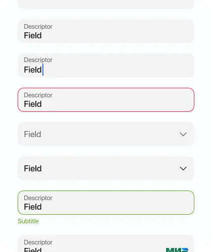
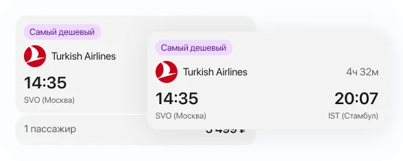
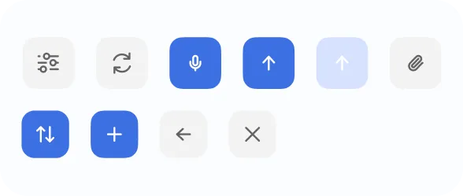

Контекст и задача
TripTap — мой учебный проект приложения для поиска и бронирования авиабилетов. Я сделал его, чтобы потренироваться проектировать не отдельный экран, а большой продукт с несколькими связанными сценариями и состояниями.
TripTap — мой учебный проект приложения для поиска и бронирования авиабилетов. Я сделал его, чтобы потренироваться проектировать не отдельный экран, а большой продукт с несколькими связанными сценариями и состояниями.
Концепция
Я разработал концепцию мобильного приложения, которое объединяет весь процесс организации перелёта в одном месте. Пользователи могут искать и бронировать авиабилеты, выбирать места, хранить электронные билеты и получать актуальную информацию о предстоящих рейсах через простой и интуитивно понятный интерфейс.

Исследование
Сначала я провёл анализ конкурентов, чтобы понять, какие решения уже существуют на рынке и где остаются точки роста.
Гипотезы
Структура
На основе предыдущих этапов я разработал информационную архитектуру приложения: она определила структуру разделов и связи между ними. Это стало основой для навигации и интерфейса.

Визуальная концепция
Проектирование началось со сбора визуальных и функциональных референсов. Я проанализировал практики для ключевых компонентов: карточек билетов, лид-форм, модулей поиска и экранов регистрации. На основе собранного сделал интерфейсные каркасы для каждого сценария.
Дизайн-система
Начал с базовых элементов: иконок, кнопок, полей ввода и ячеек списка, а из них собрал составные — карточки билетов, модальные окна, календарь и таб-бар. Цвета и шрифты вынес в токены: это дало согласованность и позволило быстро адаптировать элементы.



Итоги
Я прошёл полный цикл создания продукта: от исследования и формирования концепции до проектирования интерфейса и тестирования. Улучшил навыки системного подхода и убедился, что дизайн — процесс бесконечных улучшений.
Следующий кейс — DentaCare